Use Case
In a multi-tier architecture as shown below the EC2 in the Public Subnet hosts front end applications like web applications and RDS/EC2 instances are hosted in the Private Subnet. This way only the web application can be accessed by the public and the RDS/EC2 in the private subnet cannot be accessed by the public.
So, how do we manage the EC2/RDS in the private subnet. For ex., creating tables and populating with data, giving permissions to tables, updating the OS with the latest patches. One way is to the use bastion host, which is not that reliable the bastion host has a public IP and hackers can try to exploit this.
A much-preferred approach is to use VPN. In this use case we will explore how to setup a Client VPN in AWS and try to connect to the resources in the private subnet for the sake of maintenance.
Note that all the entire setup is done in us-east-1 (North Virginia) and the commands reflect the same. The lab can be done in some other region also, but the commands need to be modified.
AWS Services: RDS, VPC, VPN
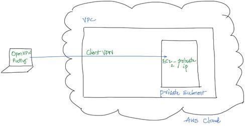
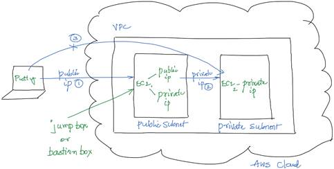
In this lab, we would be setting up a VPN Endpoint in the Default VPC. And create a MyAppVPC along with an EC2 instance in the private subnet. Finally, we would be establishing a VPN connection to the VPN Endpoint and connect to the EC2 instance using the private IP address from our Laptop. Along the way we also need to setup a Peering connection across the two VPCs.
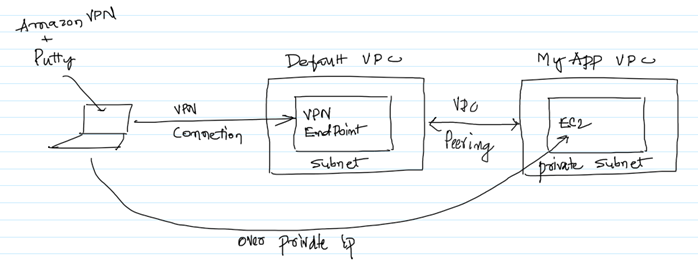
-- Goto to the IAM Screen and create an IAM Role as shown below.

-- Create an Ubuntu EC2 in the Default VPC and assign it a Role with AdministratorAccess Policy. “t2.micro” instance type should be good enough and make sure that the port 22 is allowed in the SecurityGroup inbound rules.
Name the EC2 as ForCertificateGeneration as this EC2 will be used for the VPN Certificate generation purpose only.
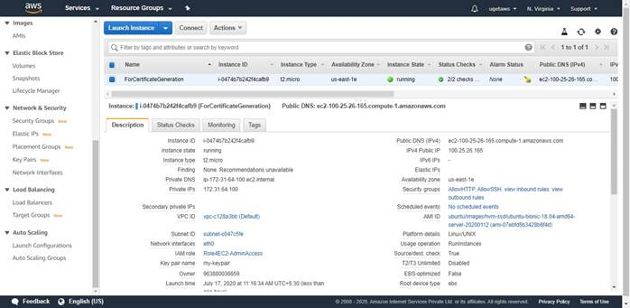
-- Login to the EC2 via the Putty or some other SSH client using the Public IP Address of the EC2 instance.
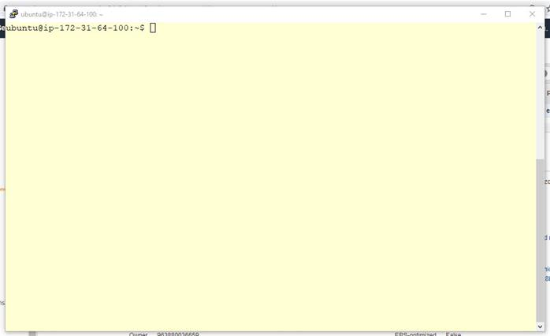
-- Install the AWS CLI, by executing the below commands in the Putty session. Finally, run the aws command as shown below to make sure that the aws command is there in the PATH.
sudo apt-get update
sudo apt-get install python2.7 python-pip
pip install awscli --upgrade
mkdir .aws
echo -e "[default]\nregion=us-east-1" > .aws/config
export PATH="$PATH:/home/ubuntu/.local/bin/"
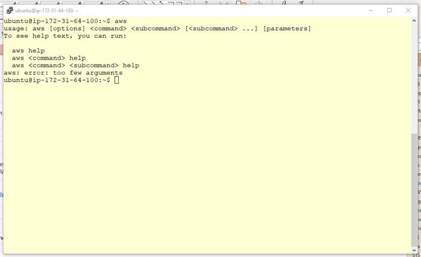
-- Clone the Easy RSA Git Repo using the below command
git clone https://github.com/OpenVPN/easy-rsa.git
cd easy-rsa/easyrsa3
-- Initialize the PKI using the below command.
./easyrsa init-pki
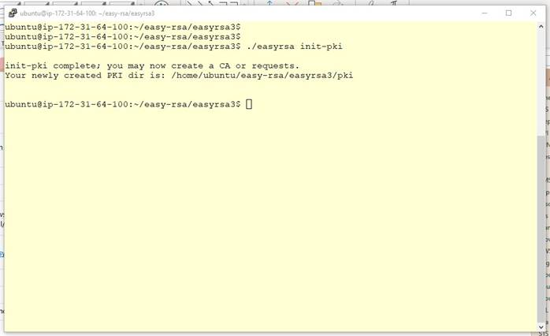
-- Build Certificate Authority using the below command. When prompted enter the common name as thecloudavenue.com. Anything can be used, but the same has to be reflected in the upcoming commands also.
./easyrsa build-ca nopass
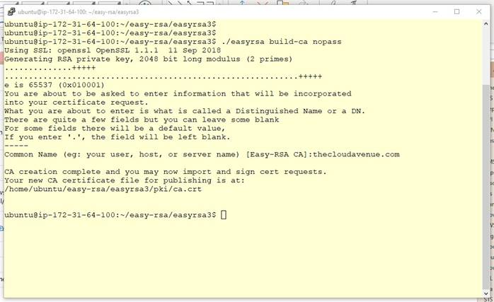
-- Build the Server Certificate using the below command.
./easyrsa build-server-full thecloudavenue.com nopass
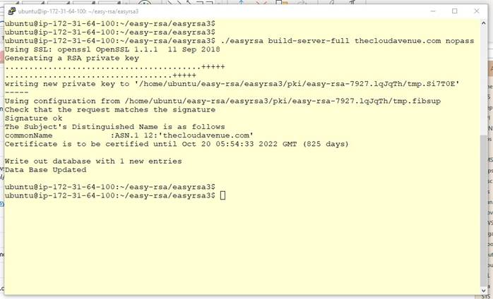
-- Build the Client Certificate using the below command.
./easyrsa build-client-full sripati.thecloudavenue.com nopass
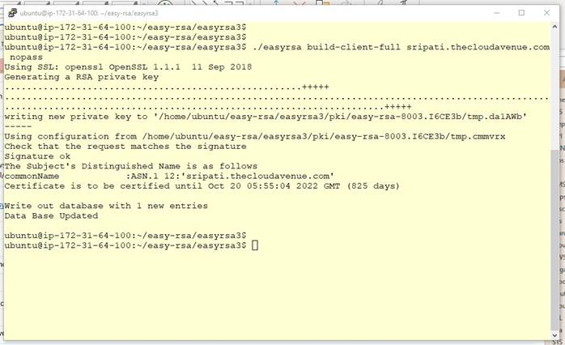
-- Move the certificates and the keys to a folder called acm using the below commands.
mkdir acm
cp pki/ca.crt acm
cp pki/issued/thecloudavenue.com.crt acm
cp pki/issued/sripati.thecloudavenue.com.crt acm
cp pki/private/thecloudavenue.com.key acm
cp pki/private/sripati.thecloudavenue.com.key acm
cd acm

-- Import the Certificates into the AWS Certificate Manager using the below commands.
aws acm import-certificate --certificate fileb://thecloudavenue.com.crt --private-key fileb://thecloudavenue.com.key --certificate-chain fileb://ca.crt --region us-east-1
aws acm import-certificate --certificate fileb://sripati.thecloudavenue.com.crt --private-key fileb://sripati.thecloudavenue.com.key --certificate-chain fileb://ca.crt --region us-east-1
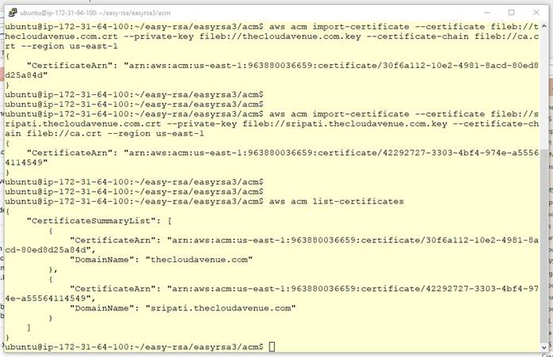
-- Go to the AWS Certificate Manager Console and the imported Certificates should appear as shown below.
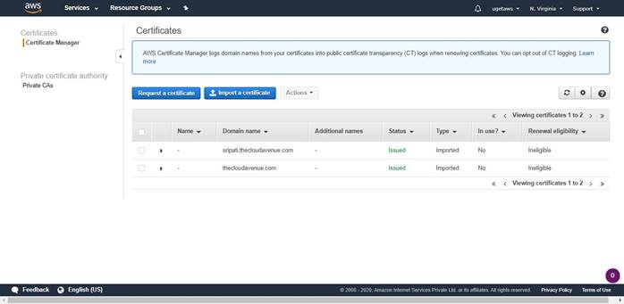
-- In the VPC Management Console go to “Client VPN Endpoints” and click on “Create Client VPN Endpoints”.
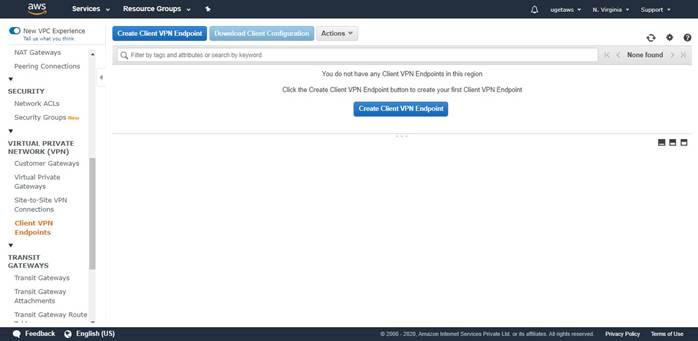
-- Enter the name, the “Client IPv4 CIDR”, select the “Server certificate ARN” (thecloudavenue.com), “Use mutual authentication” and finally select the “Client certificate ARN” (sripati.thecloudavenue.com).
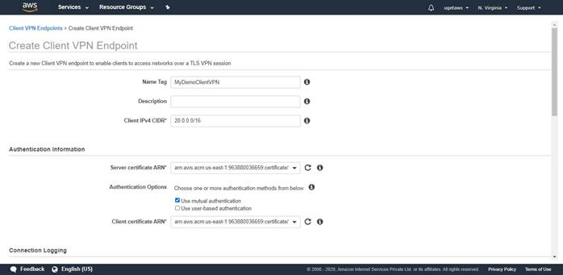
-- For the “Connection Logging” select No. Enable the “split-tunnel” and finally select the VPC.
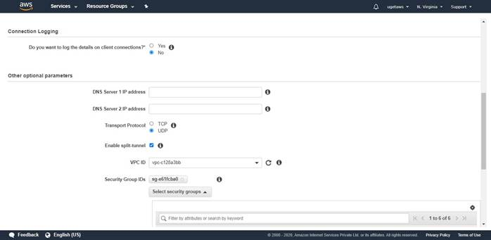
-- Click on “Create Client VPN Endpoint”.
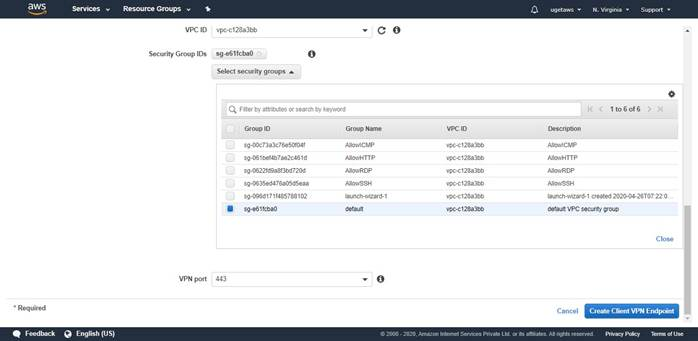
-- The “Client VPN Endpoint” will be created as shown below. Initially it would be in a “Pending-associate” state for it to be associated with a Subnet.
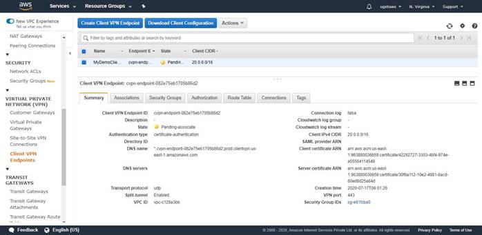
-- Click on the Associations tab and the Associate button.
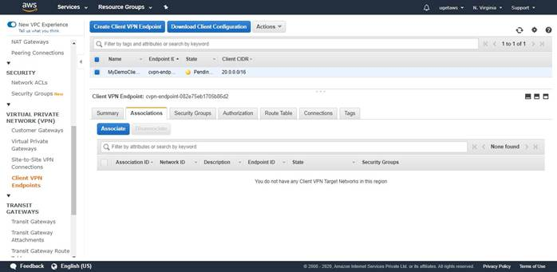
-- Select the default VPC and choose any of the Subnet. It doesn’t matter which Subnet is selected. Click on Associate.
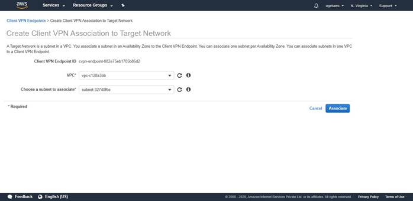
-- It will take about 5 minutes for the Client VPN Endpoint to become in the Available State and the Association to the Subnet in an Associated state.
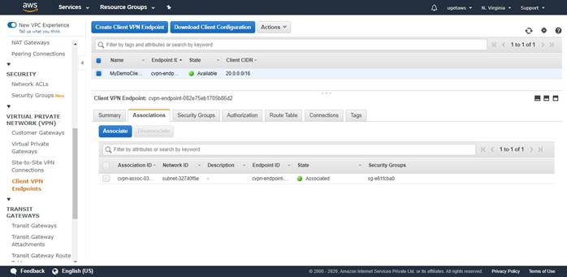
-- In the same VPC Console, go to the “Elastic IPs" screen and click on “Allocate Elastic IP Address”. The same is required for the sake of VPC Peering which we would be creating later.
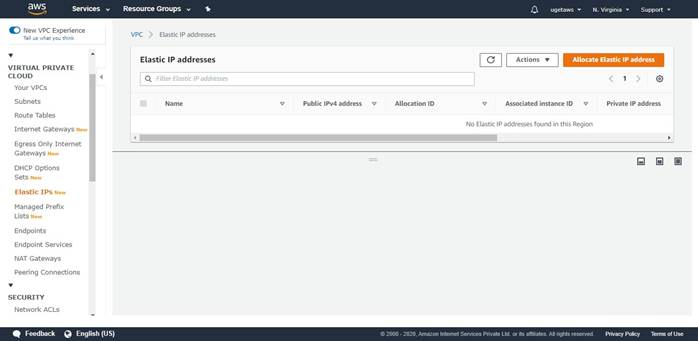
-- Click on Allocate to assign an Elastic IP address as shown below.
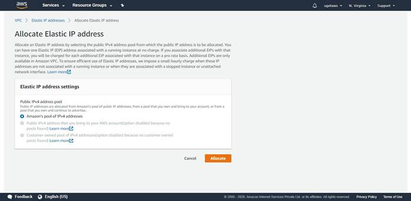
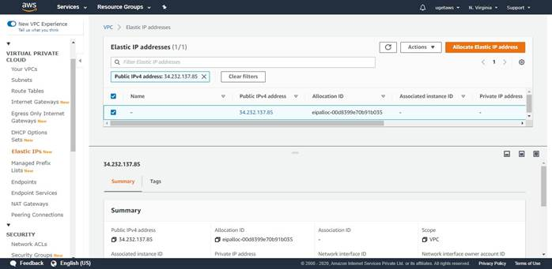
-- Now that the Elastic IP has been created, it’s time to create a new VPC. Go to the “VPC Dashboard” and click on “Launch VPC Wizard”.
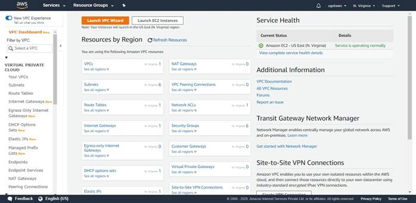
-- Select the “VPC with Public and Private Subnets” option.
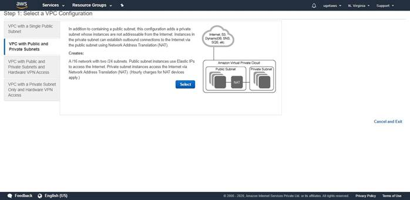
-- Give the VPC a name and select the Elastic IP created earlier. Rest of the default options are good enough. Click on “Create VPC”. It will take a few minutes for the VPC to be created.
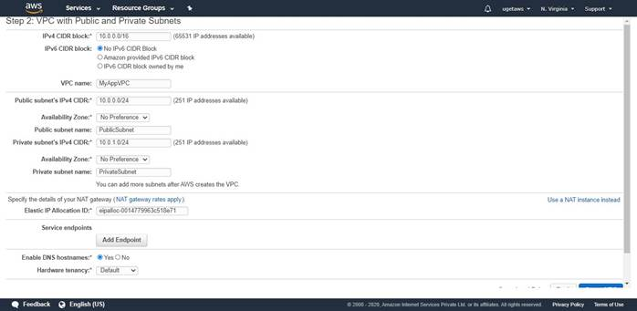
-- We will notice that there are two VPCs. One is the default and the other one is MyAppVPC which we created a few minutes back. Note sure to note the “IPv4 CIDR” for both the VPCs.
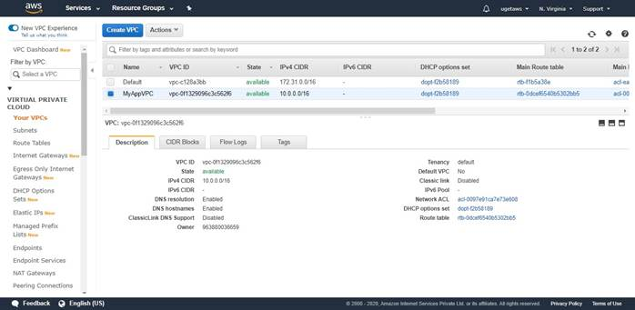
-- Go to the EC2 Console and create and Ubuntu EC2 in the MyAppVPC and the Private Subnet. In the Configure Instance screen make sure to select the right VPC and the Subnet as shown below.
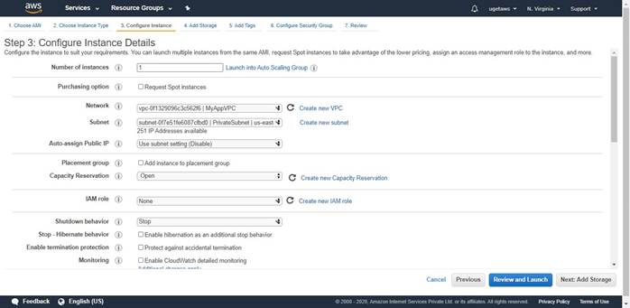
-- Also make sure to create a new Security Group to allow the SSH traffic as shown below.
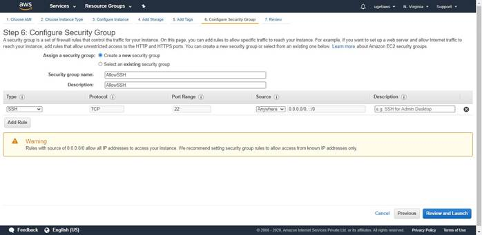
-- Name the EC2 as “MyAppVPC-PrivateSubnet”. This EC2 has only the Private IP and not the Public IP as seen below. And this EC2 is primarily used for backend applications like Databases, for which the end users/customers don’t have access to because of the lack of Public IP.
The whole exercise is about connecting to this EC2 from outside the Cloud, like
from our Laptop for the sake of maintenance.
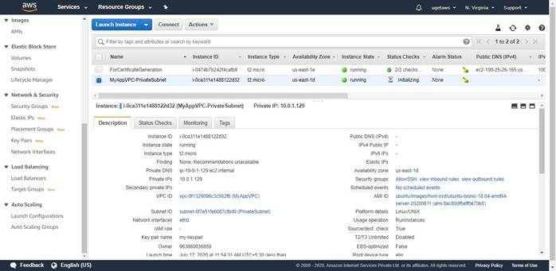
-- We need to create a Peering connection between the Default and the MyAppVPC. In the VPC Management Console, go to the “Peering Connections” and click on “Create Peering Connection”.
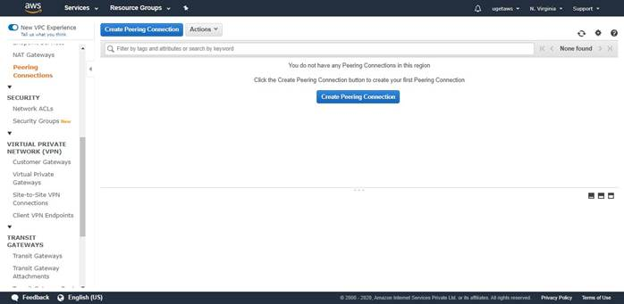
-- Give the Peering connection a name and select the Default VPC as the VPC (Requester) and the MyAppVPC as the VPC (Accepter). Rest of the options should be fine. Click on “Create Peering Connection”.
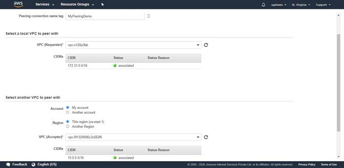
-- Initially the Peering Connection would be in a Pending Acceptance State. Go to the Actions option and select the Accept option. In a few seconds, the state of the Peering connection will change to Active.
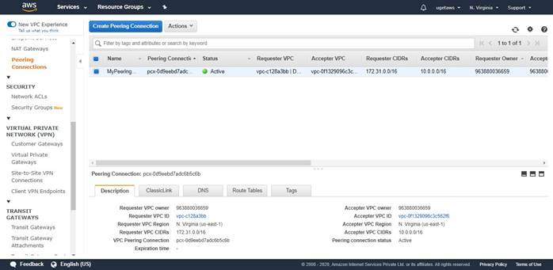
-- Now that the VPC Peering has been setup, the routing table has to be updated for the two VPCs to be able to communicate to each other.
For updating the routing table, the below steps have to be repeated for both the EC2s. The order of the EC2 doesn’t matter. Make sure to select one of the EC2 and click on the Subnet ID in the description to go to the Subnet screen.
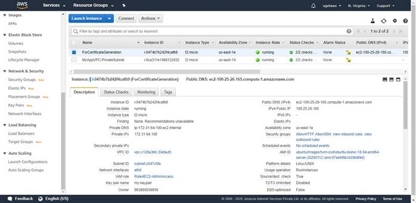
-- In the Subnet Screen, click on the “Route Table” link to go the “Route Table” properties.
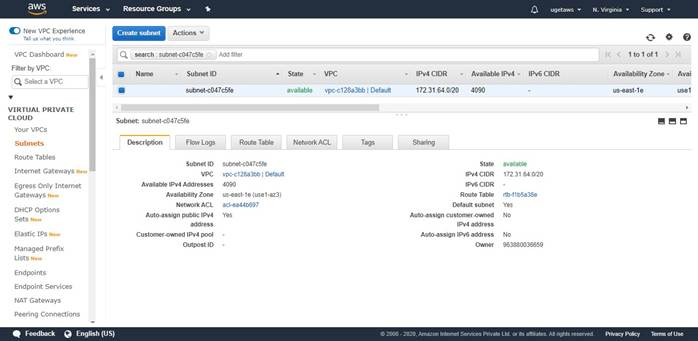
-- Click on the Routes tab and click on “Edit routes”.
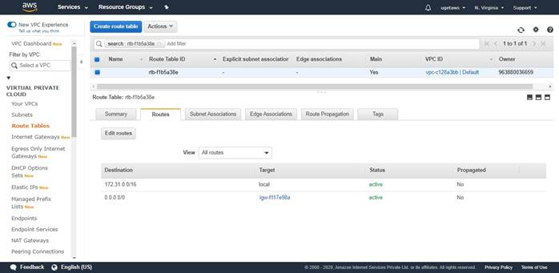
-- Notice that there is a route for one of the VPC CIDR. Click on “Add route” and add the CIDR for the other VPC. For the Target select the Peering Connection and finally the VPC peering created earlier. Click on “Save routes”.
Note that all the above steps from selecting the EC2 has to be done for other EC2 also. This completes the Peering process across the VPCs.
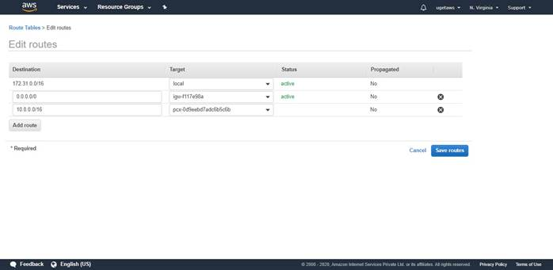
-- In the VPC Management Console, go to the “Client VPN Endpoints” and select the Authorization tab. Click on “Authorize Ingress”.
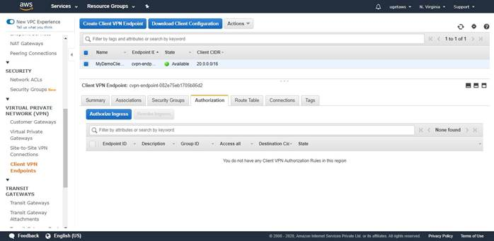
-- Enter the CIDR of MyAppVPC and some description. Click on “Add authorization rule”.
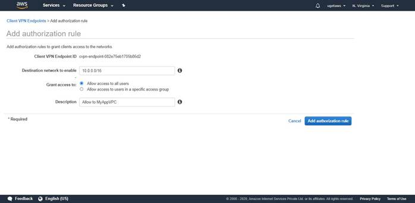
-- In a few seconds the state of the Authorization will be Active.
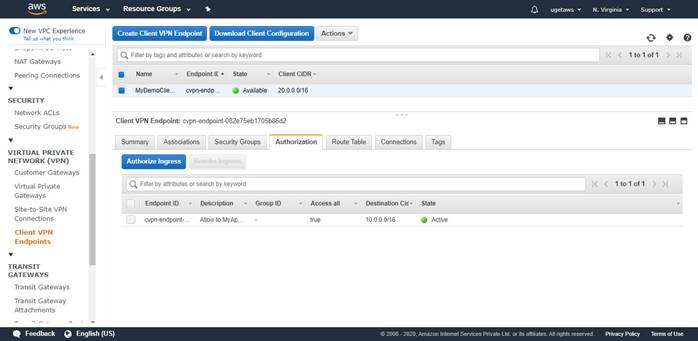
-- Click on the “Route Table tab”. Click on “Create Route”.
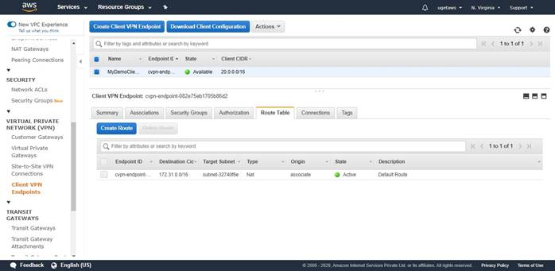
-- Give the CIDR for the MyAppVPC, Select the Target VPC Subnet ID and give some description. Click on “Create Route”.
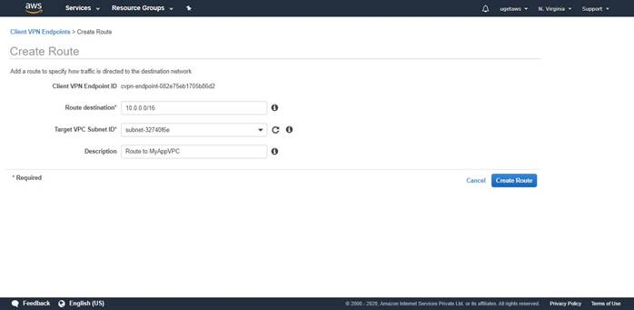
-- The “Route Table” would be updated as shown below.
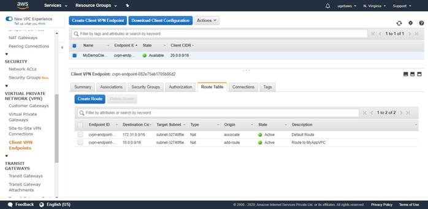
-- Click on “Download Client Configuration” to download the downloaded-client-config.ovpn. It’s a simple text file and need to be edited later.
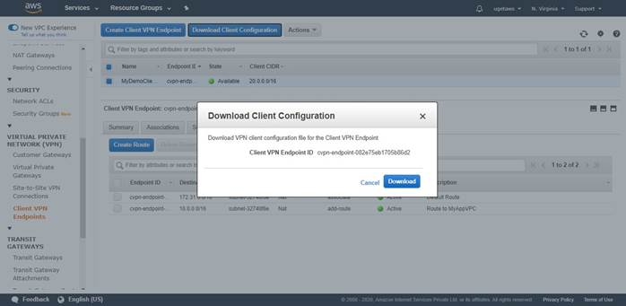
-- Copy the sripati.thecloudavenue.com.key and sripati.thecloudavenue.com.crt files from the first EC2 instance where the certificates and keys were generated. The same can be done by doing a cat on the file in the Putty session and copying the content or using a tool like WinSCP. Make sure to copy the content carefully without missing anything.
-- Open the downloaded-client-config.ovpn in a notepad. Add a random string before the VPN endpoint. Like the way “abcd.” has been below. Also, provide the cert and key paths as shown below towards the end, make sure to specify the proper path. This file has all the details for us to establish a VPN connection.
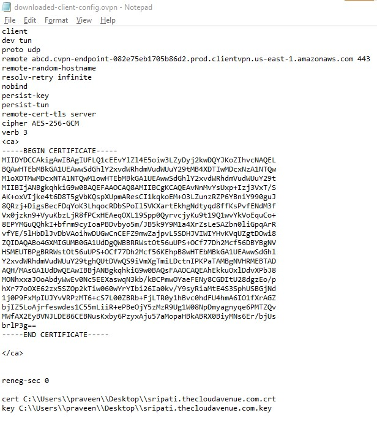
-- Download and install the AWS Client VPN (https://aws.amazon.com/vpn/client-vpn-download/.
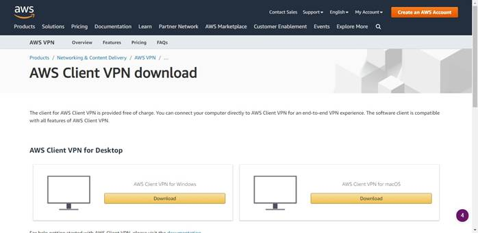
-- Start the AWS VPN Client.
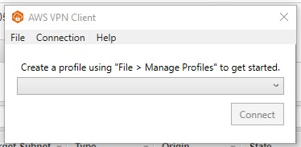
-- On the
File Menu, select “Manage Profiles” and click on “Add Profile”.
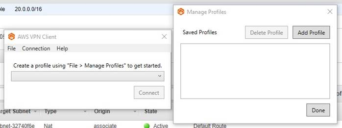
-- Give the Profile a Display Name and Point to the VPN Configuration file and click on “Add Profile”.
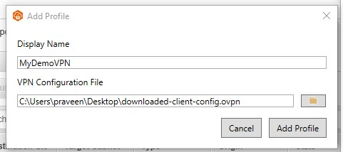
-- Click
on Connect and it takes a few seconds for the VPN connection to be established.
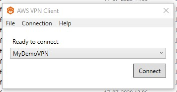
--
Finally, the connection to the VPN should be established and the Connect button
should be changed to Disconnect as the connection has been established.
-- In the “Client VPN Endpoints”, go to the Connections tab and an active connection should be displayed.
-- Go back to the EC2 Console. Select the EC2 with the name “MyAppVPC-PrivateSubnet” and grab the Private IP.
-- Use the Putty Session to connect to this EC2 via Private IP. We should be able to connect as we have established a VPN connection to the AWS Cloud.
-- Below is the Putty Session for the same.
-- The following AWS resources have to be cleaned up in the same order.
- Disconnect from the AWS VPN Client
- Terminate the EC2 instances
- Delete the VPC Peering connections
- Delete the NAT Gateway from the VPC Console
- Wait for a few Minutes
- Release the Elastic IP
- Finally delete the VPC (MyAppVPC)
- Disassociate the Subnet association to the Client VPN Endpoint
- Delete the Client VPN Endpoint
- Delete the Certificates in Certification Manager
- Delete the Role in the IAM which has been created for the EC2